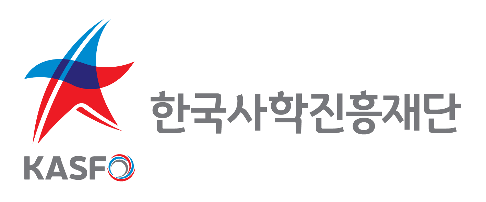

감
Education Audit Intelligence
교육부 고등교육기관 감사결과
제작·배포 회계조사부
Notice
안내사항
- 통합검색은 2017년 이후 감사 결과, 키워드검색은 2005년 이후 감사 결과를 보여줍니다.
- 키워드 검색은 문서 표현 방식에 따라 결과가 명확하지 않을 수 있습니다. 세부 정확한 내용은 ‘감사결과 확인하기’ 또는 ‘pdf 원문 열기’를 통해 확인해 주세요.
- 2017년 이후 감사 결과를 보여주며, 기준일자에 따라 감사 수검 기관이 변경될 수 있습니다.
- 궁금한 사항은 회계조사부 선임행정관 박현수(053-770-2629)로 연락 주시기 바랍니다.
통합검색
Keyword Search
키워드 검색
이사회
급여
적립금
계약
장학금